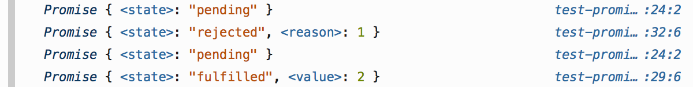
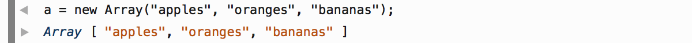
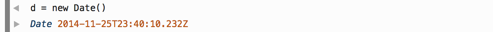
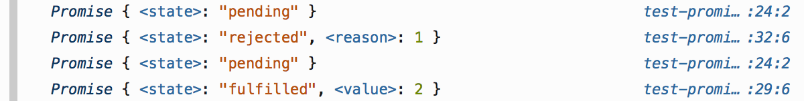
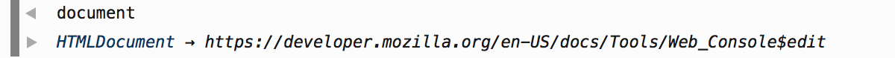
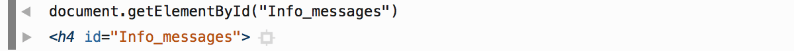
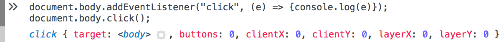
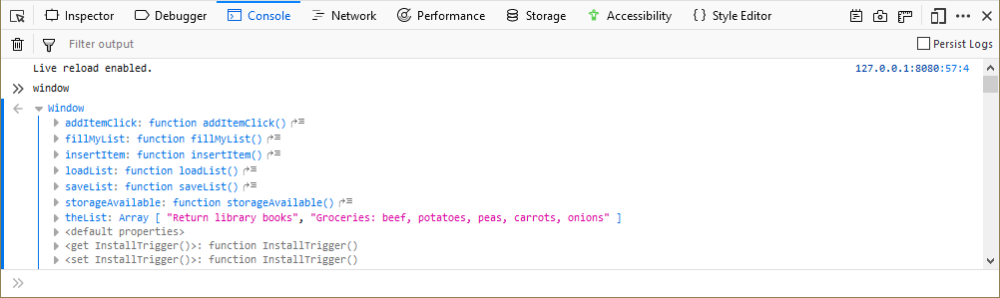
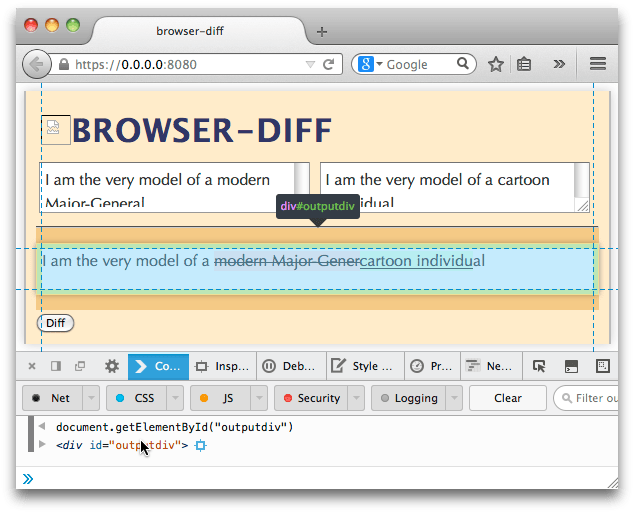

Object
ArrayDatePromise
RegExpWindowDocumentElementEventWhen the Web console prints objects, it includes a richer set of information than just the object's name. In particular, it:
The Web Console provides rich output for many object types, including the following:
Object |
|
Array |
 |
Date |
 |
Promise |
 |
RegExp |
|
Window |
|
Document |
 |
Element |
 |
Event |
 |
When an object is logged to the console it has a right-pointing triangle next to it, indicating that it can be expanded. Click on the triangle, and the object will be expanded to show its contents:

Starting with Firefox 67 (available now in Firefox Developer) you can use the arrow keys on your keyboard to navigate through objects displayed in the console. The right-arrow key opens the details of an object and the left-arrow key closes open objects.
Similar to examining object details, you can see the details about a network request directly in the console. Click on the arrow next to the request and a details panel will open that is equivalent to the Headers panel in the Network Monitor tool.
{{EmbedYouTube("Cj3Pjq6jk9s")}}
Once you have output in the console window, you can save it to the clipboard by right-clicking on the output and selecting Export visible messages to clipboard:
This will copy all of the output to the clipboard. Then you can paste it into a document. The output will look something like this:
console.log(todoList)
Array(4) [ {…}, {…}, {…}, {…} ]
debugger eval code:1:9
undefined
If you expand objects, such as arrays, you get slightly different content. For example, by expanding the array in the above list, I get the following:
console.log(todoList)
(4) […]
0: Object { status: "Done", description: "Morning Pages", dateCreated: 1552404478137 }
1: Object { status: "In Progress", description: "Refactor styles", dateCreated: 1552404493169 }
2: Object { status: "To Do", description: "Create feedback form", dateCreated: 1552404512630 }
3: Object { status: "To Do", description: "Normalize table", dateCreated: 1552404533790 }
length: 4
<prototype>: Array []
debugger eval code:1:9
undefined
If you hover the mouse over any DOM element in the console output, it's highlighted on the page:
In the screenshot above you'll also see a blue "target" icon next to the node in the console output: click it to switch to the Inspector with that node selected.